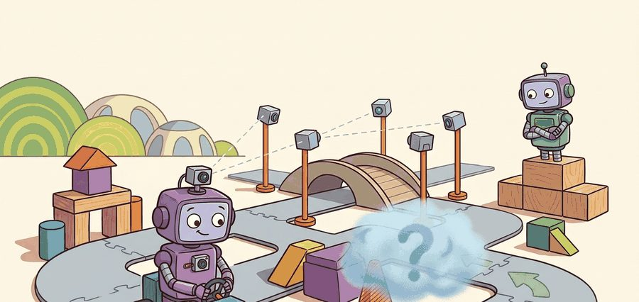
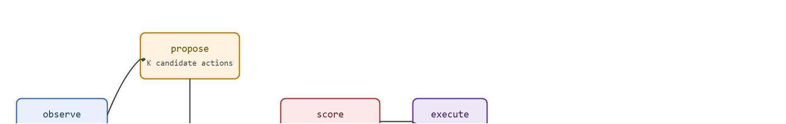

A world model lets the car ask "what happens if I do this?" without leaving the lane to find out.
On learned simulators for driving

This section assumes familiarity with model-based control from section 37.1 and with latent world models from section 38.3; the occupancy representation used here is introduced in section 28.4. The closed-loop planning pattern developed in this section is applied directly to safety evaluation in section 48.9, and the video-diffusion generation techniques are extended alongside language-conditioned scene synthesis in section 48.8.
Before a robotaxi merges across three lanes of highway traffic, it can rehearse that maneuver thousands of times inside a learned simulator, flagging collisions before they ever happen on asphalt. That capability, once science-fiction, is now the frontier: systems such as GAIA-1, UniSim, and DriveDreamer learn a world model directly from camera data, predicting future sensor streams conditioned on the car's own actions. The payoff for embodied AI is profound: rare and dangerous scenarios that cannot safely be driven in the real world can be synthesized on demand. By the end of this section you will understand how generative world models support closed-loop planning and data augmentation, why photorealistic video generation is not required for safe driving (occupancy-flow and latent-state targets are often preferable), and why photorealism, when used at all, is insufficient on its own: a model must also pass a closed-loop validity test before it can be trusted to inform a real driving decision, a test this section defines and walks through step by step in the Mechanism, Algorithm, and Worked Example below.
A hard-braking cut-in at night in rain happens on the order of once every 200,000 km of real driving by rough industry estimate, yet a car that could dream would never have to wait for one: it could conjure ten thousand of them before sunrise. That is the world-model contract, and it asks a single question. Given a history of observations and a proposed action sequence, can we predict future observations (frames, occupancy, or flow) well enough that planning decisions made in imagination transfer to the real road? A well-calibrated world model can in principle synthesize those 10,000 rare scenarios overnight at a small fraction of the marginal cost of fleet driving (GPU time, not literally zero). Without a world model, a reliable detector would need very roughly 2 billion km of instrumented driving to encounter enough of these events at the same rate; with one, a single overnight GPU run can approximate, though not guarantee, the same statistical coverage, provided the generated scenarios are representative of the real long-tail distribution. As Figure 48.5A illustrates, the planner rolls the scene forward in the model's imagination and tests maneuvers against predicted futures before committing a single real command. The recurring question is closed-loop validity: a model can produce beautiful video yet still fail the planner if its predicted dynamics drift from real physics over the horizon. A world model that cannot transfer its judgments from imagination to asphalt is not a simulator; it is a storyteller.
A learned world model approximates the environment transition $p(o_{t+1} \mid o_{\le t}, a_t)$. Unrolling it produces an imagined rollout the planner can score, turning planning into search over action sequences inside a differentiable or sampleable simulator (differentiable meaning gradients can be backpropagated through the rollout; sampleable meaning the model can instead be queried by drawing samples, without needing gradients at all). This is the driving instance of the model-based control idea: plan in a learned model, act in the world.
Turning that abstract transition model into a driving simulator means committing to a concrete way of representing the future, and the three flagship systems below stake out the pixel-space end of that design space.
Rather than render pixels, occupancy flow predicts a future occupancy grid plus a flow field describing how occupied cells move. It is cheaper, directly consumable by planning (the planner wants to know what space will be blocked), and avoids hallucinating photorealistic but dynamically wrong frames.
This matters in embodied AI because a physical vehicle has hard kinematic limits: it cannot teleport, stop instantly, or pass through another object. A pixel-level video generator can satisfy perceptual metrics while violating these constraints silently, producing frames where a car appears to slow but the implied closing speed remains dangerous. Occupancy flow encodes exactly the quantities the actuator layer needs: which cells are blocked and how fast they are moving, giving the planner a collision check that is grounded in real physical geometry rather than appearance.
So far: world models fall into two families, pixel-space generators (GAIA-1, UniSim, DriveDreamer) that render full frames, and occupancy-flow models that predict only a blocked-cell grid plus per-cell velocity; the next subsection shows how that occupancy-flow grid is actually trained and queried.
Mechanically, the network predicts two tensors over a fixed bird's-eye-view grid at each future timestep: a binary (or probabilistic) occupancy map and a 2-D velocity vector per occupied cell. To train the flow vectors, the model warps the current occupancy forward with the predicted velocities and minimizes a Chamfer or cross-entropy loss (where the Chamfer loss is the average distance from each predicted occupied point to its nearest ground-truth occupied point, and vice versa, penalizing both missed and spurious occupied cells) against the ground-truth future occupancy. At inference the planner does two things. It convolves the ego vehicle's footprint against the predicted occupied cells to compute collision probability, and it integrates the flow vectors to project cell positions further ahead without running additional network passes.
"UniSim: Learning Interactive Real-World Simulators" (Yang et al., ICLR 2024). UniSim learns a single action-conditioned generative simulator from heterogeneous real-world data (robot trajectories, human activity, navigation), so that issuing an action produces a plausible next visual observation. For driving, the promise is to train and evaluate policies inside a learned simulator that captures real-world appearance and dynamics, reducing reliance on hand-built simulators and risky on-road testing. The paper's central evidence is that policies and perception models trained purely in the learned simulator transfer to real settings, which is the property a driving world model must have to be more than a video generator.
The decisive test of a driving world model is not frame realism but whether a maneuver judged safe in imagination is safe on the road. A model that produces crisp frames yet lets predicted vehicles drift off-physics over a 5 s horizon will mislead the planner. Always evaluate the model by closed-loop policy transfer, not only by perceptual fidelity metrics.
For closed-loop planning the loop is: encode current observation, propose candidate action sequences, unroll the world model for each to get imagined futures, score each future with a reward or cost (collision, progress, comfort), and execute the first action of the best sequence (model predictive control (MPC) in latent space). For data augmentation the loop is offline: sample diverse conditions (weather, agents, rare events), generate synthetic sensor data plus labels, and add it to the training set for downstream perception and planning.
Figure 48.5B below traces this closed-loop planning cycle as a five-stage diagram, from observing the current state through imagining candidate futures to executing the chosen action.

Input: current observation $o_t$, action candidate set $\mathcal{A} = \{a^{(1)}, \ldots, a^{(K)}\}$, world model $\hat{p}_\theta$, planning horizon $H$, cost function $c(\cdot)$, safety threshold $\delta$
Output: selected action $a^*$ to execute at time $t$
Trace the closed-loop planner with concrete numbers. Start with ego-lead gap $o_t = 18.0$ m, ego speed $14.0$ m/s, lead speed $9.0$ m/s, horizon $H = 3.0$ s, $dt = 0.1$ s, safety floor $\delta = 3.0$ m. Score two candidate accelerations.
Candidate $a = +1.0$ m/s$^2$ (accelerate): the closing rate is $\text{lead\_v} - \text{ego\_v}$, which starts at $9 - 14 = -5$ m/s and grows more negative as ego speeds up. Step 1: ego_v $= 14.1$, gap $= 18.0 + (9 - 14.1)(0.1) = 17.49$ m. The gap keeps falling; by $t = 3$ s ego_v $= 17.0$ and the imagined min_gap drops to about $-2.6$ m (a collision). Since min_gap $< \delta$, this candidate is rejected.
Candidate $a = -2.0$ m/s$^2$ (brake): Step 1: ego_v $= 13.8$, gap $= 18.0 + (9 - 13.8)(0.1) = 17.52$ m. Ego decelerates until it matches the $9$ m/s lead near $t = 2.5$ s; the gap bottoms out around min_gap $\approx 11.6$ m, comfortably above $\delta$. Score $=$ min_gap $- 0.5\,|a| = 11.6 - 1.0 = 10.6$. This candidate passes the floor and wins over the milder decelerations because it is the cheapest action that keeps the margin safe.
The planner executes the first command of $a = -2.0$, re-observes at $t + 0.1$ s, and repeats. Notice that the verdict flips entirely on the predicted closing dynamics: accelerate looks fine for one frame ($17.49$ m) but the multi-step rollout exposes the collision the single step hides.
Wayve uses its GAIA generative driving world model to synthesize rare and counterfactual scenarios (jaywalkers at dusk, unusual roadworks, swerving cyclists) conditioned on ego actions, then trains and stress-tests its end-to-end driving policy against these imagined futures before any on-road exposure. This lets the company expand coverage of long-tail events that its London and US test fleets encounter only once in hundreds of thousands of kilometres, in principle turning a single overnight generation run into statistical coverage that would typically be impractical or unsafe for a real fleet to collect on public roads (the actual coverage gain depends on how well the generated scenarios match real-world event distributions).
The example strips the planning loop to its core. A toy action-conditioned predictor unrolls each candidate acceleration, and the planner keeps the action whose imagined future holds the largest safety margin, mirroring the real closed-loop pattern without a learned network.
import numpy as np
# Toy learned world model: predicts future ego-lead gap given an ego action.
# In reality this is a neural net rolling out future frames or occupancy.
def world_model_rollout(gap0, ego_v0, lead_v, accel, horizon=3.0, dt=0.1):
"""Imagine the gap trajectory under a constant ego acceleration."""
gap, ego_v, gaps = gap0, ego_v0, []
for _ in range(int(horizon / dt)):
ego_v = max(0.0, ego_v + accel * dt)
gap += (lead_v - ego_v) * dt # lead minus ego closing rate
gaps.append(gap)
return np.array(gaps)
gap0, ego_v0, lead_v = 18.0, 14.0, 9.0 # closing on a slower lead
candidates = [-3.0, -2.0, -1.0, 0.0, 1.0] # candidate ego accelerations
best_a, best_score = None, -np.inf
for a in candidates:
future = world_model_rollout(gap0, ego_v0, lead_v, a)
min_gap = future.min() # imagined worst-case safety margin
# Reward keeping a margin while not braking harder than needed.
score = min_gap - 0.5 * abs(a)
print(f"accel={a:+.1f} imagined_min_gap={min_gap:5.1f} m score={score:5.2f}")
if min_gap > 3.0 and score > best_score: # require a hard safety floor
best_a, best_score = a, score
print("chosen action (m/s^2):", best_a)Expected output: aggressive positive accelerations let the imagined gap fall below the 3 m floor and are rejected; a mild deceleration wins because it preserves the safety margin at the least control cost. Swapping in a real GAIA-1- or UniSim-style model replaces world_model_rollout with a learned rollout while keeping this select-by-imagined-margin structure.
For world-model research, nuScenes and the Waymo Open Dataset supply real driving video and occupancy labels; the Occupancy Flow Challenge tooling evaluates occupancy and flow predictions. Open implementations of video-diffusion driving generators (DriveDreamer-style) and latent world-model planners (Dreamer-style) provide starting points. Validate any generator by closed-loop policy transfer in CARLA, not by frame metrics alone.
The choice of world-model output format depends on the downstream consumer and available compute. Full video generation (GAIA-1, DriveDreamer) is best for data augmentation where perception models need realistic pixel inputs; it is too slow and hallucination-prone for real-time closed-loop planning. Occupancy plus flow is the right target when the consumer is a planner or trajectory predictor: it is computationally cheap, directly encodes what space will be blocked and how fast, and avoids the pixel-realism trap. Latent-state rollouts (Dreamer-style) suit online MPC inside a compact learned latent space, but require careful calibration because latent distances do not map cleanly to physical safety margins. A common mistake is training a video model and then trying to plan inside it; the correct sequence is to pick the output format from the planning interface first, then train accordingly.
Think of latent space like a hand-drawn city map where the artist kept street names but distorted distances: two intersections that look close on the map may be a kilometre apart on the ground. When a world model rolls forward in latent space, each step moves according to the map's geometry, not the city's. A sequence of steps that appears to end safely on the map can place the car in the middle of oncoming traffic in reality. That is why a short imagined gap in latent coordinates does not mean a short physical gap, and why drift in latent space compounds into dangerous miscalculations long before the planner notices anything wrong.
When using a Dreamer-style latent world model for driving MPC, compute the multi-step Average Displacement Error (ADE) on a held-out nuScenes split at 1 s, 2 s, and 3 s rollout horizons before you set the planning horizon. Cap the planning horizon at the first step where ADE exceeds your lane-keeping tolerance (typically 0.3 m for highway, 0.5 m for urban), because latent distances do not map linearly to metric space and the drift compounds silently. Skipping this calibration is the most common reason a latent-space planner performs well in imagination but triggers unsafe maneuvers on the road.
A common assumption is that a world model producing photorealistic driving video is suitable for closed-loop planning. That assumption is wrong. A physical vehicle must act on physically consistent predictions, not visually plausible ones. A video generator can render a car that appears to slow down while the implied closing speed in the generated frames violates real kinematics. The planner then judges a collision course as safe. Perceptual fidelity metrics such as FID and SSIM (FID, the Frechet Inception Distance, and SSIM, the Structural Similarity Index, both score how visually realistic a generated frame looks compared to a real one) measure appearance, not dynamical correctness. The only criterion that matters for planning is closed-loop validity: maneuvers the model judges safe in imagination must also be safe on the road.
Horizon drift: a world model accurate at 1 step accumulates error over a multi-second rollout, so the planner optimizes against a fantasy. The symptom is plans that look great in imagination and fail on the road. Always report multi-step rollout error and cap the planning horizon at the length where the model is still calibrated.
A team cannot collect enough wet-night cut-in data. They condition a DriveDreamer-style generator on map, agent layout, and a cut-in action to synthesize labeled wet-night cut-ins, add them to training, and measure the predictor's miss rate on a real wet-night held-out slice. The augmentation counts only if that real-slice metric improves.
A world model is a daydream with a deadline: it must imagine the next few seconds well enough to act on, and no further.
Three active directions are shaping end-to-end and world-model driving research in 2024-2026.
1. Language-conditioned driving agents. Systems such as DriveVLM (Tian et al., 2024, Wayve/ECCV 2024) couple a vision-language model (VLM) to a motion planner so that free-text scene descriptions and instructions directly steer trajectory generation. The reported finding is that VLM chain-of-thought reasoning can, in the studied benchmarks, resolve ambiguous interactions (unprotected left turn across oncoming cyclists) that pure imitation policies handle poorly, because the language head forces explicit intermediate reasoning steps before committing to an action.
2. 4D occupancy world models for closed-loop planning. OccWorld (Zheng et al., NeurIPS 2024) and the broader OccGen family predict a 4D (3D space plus time) occupancy evolution conditioned on ego actions, replacing pixel generation with a volumetric representation that encodes which voxels (voxels are the 3-D analogue of pixels: small cubes of space, each either free or occupied) will be occupied and how they will move. This makes collision-checking exact rather than heuristic and reduces the hallucination rate of implied closing speeds that plagues video-diffusion generators.
3. Scaling end-to-end driving with internet-scale pre-training. DriveLM (Sima et al., ECCV 2024, OpenDriveLab) frames driving as visual question-answering over graph-structured scene descriptions, enabling a single transformer pre-trained on web-scale vision-language data to be fine-tuned as a full-stack driver. The approach suggests that internet pre-training can reduce rare-event failure modes, plausibly because the model has already seen textual descriptions of edge cases, even without real driving video of those events.
Open problem for a PhD student: All three directions share a calibration gap: a world model or VLM agent judged safe by perceptual or language metrics may still violate kinematic constraints silently because nothing in the training loss penalizes dynamically inconsistent predictions. A tractable thesis problem is to derive a differentiable physics-consistency loss (conserved momentum, kinematic feasibility of predicted occupancy flow) and show that adding it to the training objective of an OccWorld-style model reduces closed-loop collision rate without degrading scene-generation realism, using the nuScenes-val closed-loop benchmark as the evaluation surface.
Can you state the two distinct uses of a driving world model (closed-loop planning and data augmentation) and the single property (closed-loop transfer) that validates both? If not, revisit the spotlight and key-insight boxes.
| Tool or Library | Role in the Topic | Builder Advice |
|---|---|---|
| nuScenes, Waymo Open Dataset | Real video and occupancy for training and evaluation | Use real held-out slices to validate augmentation. |
| Occupancy Flow Challenge tooling | Occupancy and flow metrics | Prefer occupancy/flow when the consumer is planning. |
| CARLA closed-loop harness | Policy-transfer validation | Judge world models by transfer, not frame fidelity. |
Beginner (weekend): Toy closed-loop world-model planner in Gymnasium. Build a simple action-conditioned predictor using a small MLP trained on a Gymnasium highway-env episode buffer, then run imagined MPC by scoring candidate accelerations against predicted future gaps. The key challenge is seeing firsthand how planning horizon drift degrades action quality as rollout steps increase, even with a near-perfect model on a simple environment.
Intermediate (1-2 weeks): Occupancy-flow world model for CARLA with closed-loop validation. Train a lightweight convolutional network on CARLA bird's-eye-view occupancy grids (from the CARLA Python API via ROS2 bridge) to predict a 2-second occupancy-plus-flow tensor conditioned on the ego vehicle's acceleration and steering commands, then evaluate closed-loop collision rate against a constant-velocity baseline inside CARLA's closed-loop benchmark. The key challenge is ensuring the predicted flow vectors remain kinematically consistent at 2 seconds so the planner does not select merges that are safe in imagination but cause collisions on the simulator road.
Section 48.3 covers explicit trajectory prediction this section generalizes, Section 48.4 and 48.8 consume imagined futures for planning, and 48.9 evaluates whether world-model-driven policies are actually safe closed-loop.
Add Gaussian drift to the toy world_model_rollout that grows with the rollout step, then re-run the planner. Find the horizon at which the chosen action flips to an unsafe one, and report it as the model's usable planning horizon.
Yang et al., "UniSim: Learning Interactive Real-World Simulators," ICLR 2024. Hu et al., "GAIA-1: A Generative World Model for Autonomous Driving," 2023. Wang et al., "DriveDreamer: Towards Real-World-Driven World Models for Autonomous Driving," ECCV 2024.
These define learned interactive simulators and generative driving world models used for planning and augmentation.
World models let a vehicle plan and train inside imagined futures and synthesize rare scenarios for free. Their worth is decided by closed-loop transfer and long-horizon consistency, not by how realistic a single generated frame looks.
Design a same-panel experiment comparing a constant-velocity predictor against a learned world-model rollout for planning on a hard-braking-lead scenario set. Report imagined-versus-realized gap error at 1 s, 2 s, and 3 s, and the closed-loop collision rate, and argue which is safe to deploy.